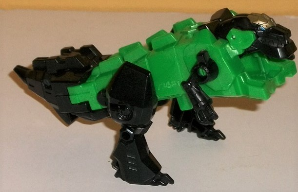
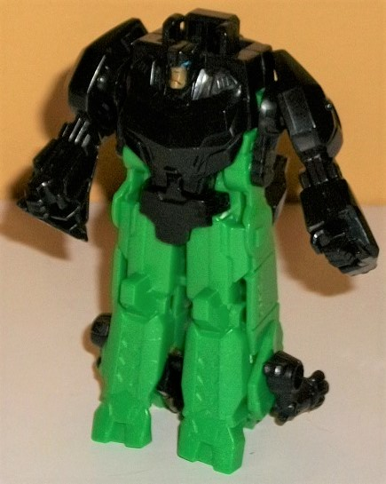
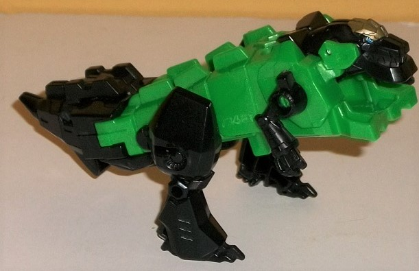
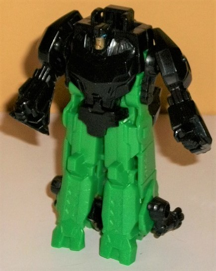
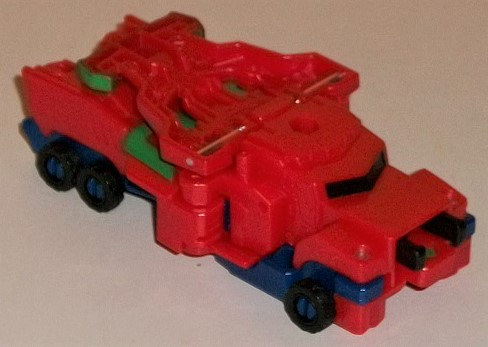
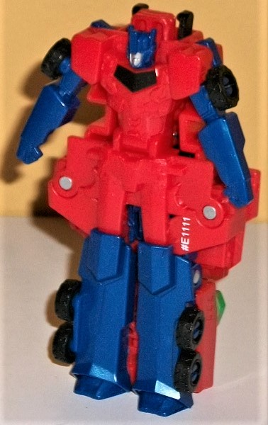
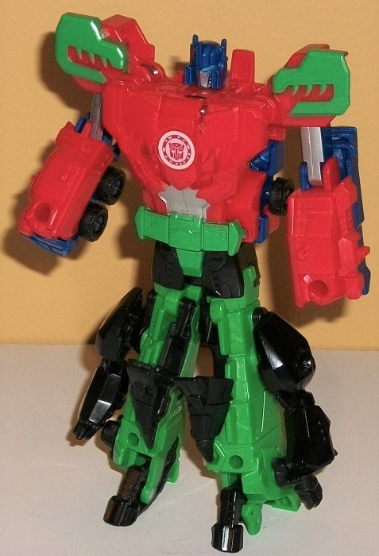

 
Difficulty of Transformation : Very Easy
Color Scheme : Black, moderately light milky green, and some light blue and pale metallic bronze
Individual Rating : 3.4
Allegiances
: Autobot
Size:
Crash Combiner 2-pack
Overall Rating
: 4.1
 Grimlock
Grimlock


Difficulty of Transformation
: Very
Easy
Color Scheme
: Black, moderately
light milky green, and some light blue and pale metallic bronze
Individual Rating
: 3.4
Grimlock's t-rex-ish
beast mode ends up being pretty poor for his Crash Combiner version, which
is a shame, as the alt modes are usually the best on these small toys.
His body is really out-of-proportion, looking like one big long "tail"
all the way down, with no tapering off much at the front end or widening
out at the midsection. Obviously this is so that he makes for slightly
more proportional combiner legs given his transformation, but it's a pretty
bad look in this mode. There's also some chunks of plastic that are just
there to make either of the other modes look more streamlined, like a chunk
on the back of his tail, and some robot mode details like his chest sticking
out near where his butt would be in this mode. The robot feet also stick
out rather oddly below the t-rex head, almost like he's got a small shovel
on the front of his body. The t-rex head itself is decent, if a tad small,
with nice mold detailing. Same goes for the arms and legs-- they're a bit
small, or the body's a bit big-- sometimes it's hard to tell. The mold
detailing on them is surprisingly on-the-nose, even when it comes to the
small details, like the circular details around the hips and the small
individual claws on the hands. However, as you might expect from a Crash
Combiner, there really isn't any paint to bring these details out-- just
some light blue on the eyes and pale bronze on the headcrest. Otherwise,
the body is green, and everything else is black-- also not really all that
accurate to the usual color scheme breakup of this mode. For articulation
in this mode, Grimlock can move back-and-forth at the shoulders and hips--
which honestly is just about the most articulation any Crash Combiner toy
has.
The transformation is
SLIGHTLY more complicated than on your average Crash Combiner, but still
pretty darned easy. Slide back the legs some to form the robot mode hands,
then fold in the beast head to become the heels and split open the body
a bit to become the legs. Fold the tail behind the robot back, and then
unfold Grimlock's robot head from inside his robot chest, and you're done.
The end result looks much better than his beast mode, though admittedly
that's a pretty low bar. Like basically all individual Crash Combiner members,
Grimlock's robot mode details are etched into the underside of his alt
mode, though in this case that still leaves him pretty proportional-- his
upper legs are a bit thick, but that's about it. His tail hangs off his
back rather obviously if you look at Grimlock from an angle other than
straight-on, and his dino arms hang off the lower legs regardless, but
compared to how bad Crash Combiner proportions can get in this mode it's
not all that bad. The mold detailing is, again, surprisingly good in this
mode, with all of Grimlock's major details there, from the fingers on his
molded hands on the bottom of his dino feet, to the angular bits on his
chest, to his toed feet. His headsculpt is also prety spot-on, and like
in beast mode, it's the only place he has paint in this mode-- bronze on
his face and light blue on his eyes. Color-wise, the rest of this mode
breaks up into green for the legs and black on the upper body and arms.
Again, more paint would have been GREATLY appreciated, even moreso than
for most other individual Crash Combiner toys. For articulation in this
mode, he can move back-and-forth at the arms-- the same movement he had
for his legs in beast mode.
 Optimus
Prime
Optimus
Prime


Difficulty of Transformation
: Very
Easy
Color Scheme
: Dark milky semi-metallic
blue, milky semi-metallic red, and some black, dull forest green, and silver
Individual Rating
: 2.5
(NOTE: Because this toy is a repaint, this is not a full-blown review. This mainly covers any changes made to the mold and the color schemes, and merely compares it to the original RID2015 Optimus Prime Crash Combiner toy. For a review on the mold itself, read the review of the original RID2015 Primestrong set here .)
Optimus Prime makes yet
another appearance in the Crash Combiner line, this time with some remolding--
however, all of the remolding is saved for his combined mode parts. In
his individual robot and vehicle mode, he's basically the same (bad) toy
he was in the first release. The mold detailing and pieces for these modes
is the same, including the weird stretched proportions in robot mode and
just a horrible central section on the vehicle mode. The shade of red used
is more of a medium shade than a medium-dark shade on the original, but
other than that the color scheme is the same-- minus the extra green that's
visible from some of the combined mode parts on the back half of the vehicle
mode. This comes down to the same black paint apps used on the windows
and silver on the robot face-- though this version of Prime doesn't have
his eyes painted because of the extra paint apps on the combined mode pieces.
 Primelock
(Combined Form)
Primelock
(Combined Form)

Difficulty of Transformation
: Easy
Individual Rating
: 6.3
Primelock is the combined
form of both of them, and since Optimus is a remold of the orignal Primestrong
Optimus, the same overall construction for the upper body is here, including
the same elbow-only articulation, the legs on the back of the hands, etc.
What IS different are most of the molded-in details for the upper half.
The head now has Optimus' headcrest, but with a faceplate and larger eyes
like G1 Grimlock. The chest has some teeth detailing above the abs, as
well as a belt across the waist. The lower arms have some more angular
mechanical details on the sides compared to Primestrong's lower arms, and
the shoulders have-- awesomely-- t-rex head silhouettes on them. The green
paint really helps bring out these awesome details, and is used on the
belt as well, though it also should've been used on the "jaws" on the chest.
The abs are painted silver, and the headsculpt is a dark blue around the
helmet, with lighter blue eyes and a silver faceplate. There's also some
silver used on the front of the upper arms. All of the paint for this mode
is used on the upper body, though, and the lower body is completely unpainted.
It consists mostly of the back of Grimlock's robot mode, but split mostly
in half down the middle, and the robot arms/dino legs moved down a bit
from Grimlock's shoulders. The end result makes for pretty iffy legs, all
things considered. Yeah, the color breakup does make it obvious the green
portions are the "real" legs and the rest of this portion of the toy is
to be de-emphasized, but that doesn't negate the fact there's robot arms
and dino arms just hanging unceremoniously off the sides of each leg, and
tail halves hanging off the front-- and too low and towards the center
to look like proper "kneecaps", either. The heels from Grimlock's robot
mode make for decent toes here, but overall the legs of this combined more
are definitely pretty weak and kibble-y. As with other Crash Combiner lower
bodies, the legs can move side-to-side VERY slightly, but that's it.
I understand the need
to have all the main characters from RID2015 all repersented in some Crash
Combiner form, but overall this is the weakest pair of molds of all the
Crash Combiner sets. Optimus was already one of the weakest molds in the
subline, and his essential construction hasn't changed, just some of the
combined form details (even though some of the new details ARE cool). I
would have preferred a Crash Combiner form of Drift instead, who could
probably pull off his design much better in both modes despite the simplistic
transformation and gimmick limitations. Grimlock, meanwhile, has an...
okay individual robot mode, but his beast mode is bad and just obviously
was not designed with any sort of combination in mind, and it shows with
horrible proportions. Grimlock's combined form isn't much better, with
the arms of BOTH modes just hanging off the legs uncermoniously and it
not at all looking solid. Not recommended.
Review by Beastbot